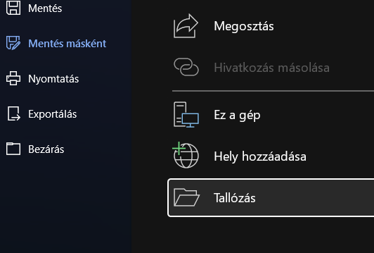
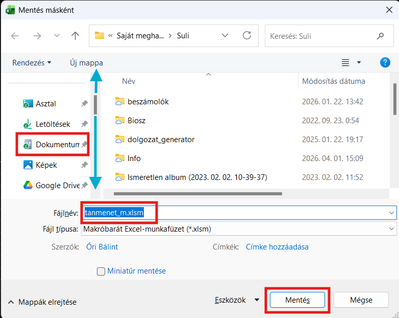
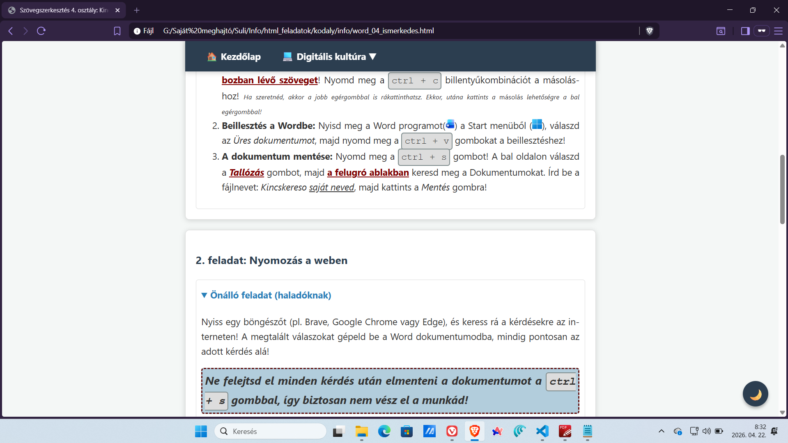
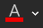
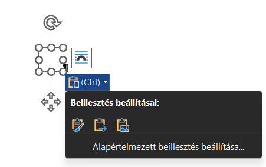

Szuper! Pontosan így működnek a segítő tippek. Ha újra rákattintasz a piros szövegre, ez a doboz összecsukódik.
Üdvözöllek, kalandor! A mai próbatételen megmutathatod, mit tanultál az internetes keresésről és a Word szövegszerkesztőről!
Minden lépésnél választhatsz: ha már profi vagy, nyisd le az Önálló feladat részt. Ha szeretnéd, hogy lépésről lépésre segítsek, nyisd le a Könnyített lépések részt! Ha így formázott piros szöveget látsz, arra érdemes rákattintani!
Újdonság: Minden feladat végén kipipálhatod, ha elkészültél vele, így alul láthatod, hány pontnál és milyen jegynél tartasz!
Kattints arra a csapatra, amelyikbe a tanár osztott! Minden csapat saját titkos kérdéseket és színeket kap!
Másold ki a kártya alatti szürke dobozból a kérdéseket! Nyisd meg a Wordöt, és illeszd be egy új, üres dokumentumba! Mentsd el a fájlt a saját meghajtódra Kuldetes saját neved.docx néven! (A saját neved helyére a valódi nevedet írd! 😊)
 ) a Start menüből (
) a Start menüből ( ), válaszd az Üres dokumentumot, majd nyomd meg a ctrl + v gombokat a beillesztéshez!
), válaszd az Üres dokumentumot, majd nyomd meg a ctrl + v gombokat a beillesztéshez!

Nyiss egy új lapot a böngészőben, és keress rá a 3 kérdésre! A megtalált válaszokat gépeld be a Word dokumentumodba, mindig pontosan az adott kérdés alá, új sorba!
Minden válasz után mentsd el a munkádat a ctrl + s gombokkal!

Ne felejtsd el elmenteni a dokumentumot a ctrl + s gombokkal!

) gomb melletti kis nyíllal állítsd át a cím színét a klánod fő színére: !
Keress a Google Képkeresőben egy képet a klánod címerállatáról/trófeájáról: ! Másold le a képet az internetről, és illeszd be a Word dokumentumod legaljára! A sarkánál fogva kicsinyítsd le egy kicsit, ha túl nagy lenne, majd mentsd el a fájlt (ctrl + s)!

Ha kész vagy, nyomj egy utolsó ctrl + s mentést, és add be a munkádat a lenti villogó sáv leírása alapján!
Ha végeztél vagy vége az órának, az alábbiak szerint adhatod be a munkádat.
Görgess le a részletekhez, ha valami nem tiszta!


 )! Itt a Kezdőképernyő alatt látnod kell az éppen most elmentett fájlodat. Kattints erre egyszer, hogy kijelöld (ne duplán!), majd nyomd meg a ctrl + c billentyűkombinációt!
)! Itt a Kezdőképernyő alatt látnod kell az éppen most elmentett fájlodat. Kattints erre egyszer, hogy kijelöld (ne duplán!), majd nyomd meg a ctrl + c billentyűkombinációt!